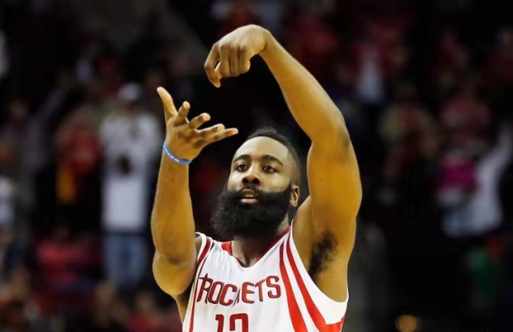
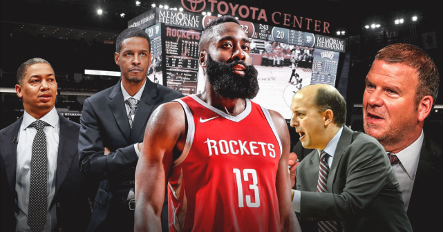
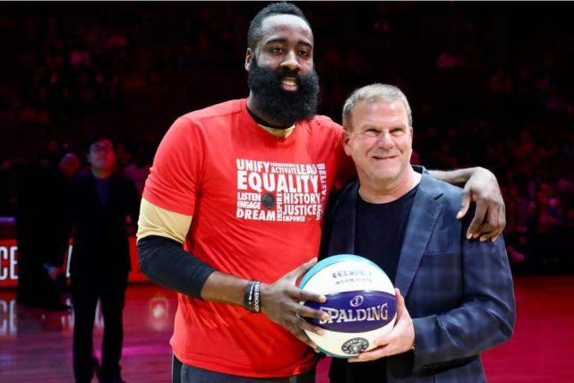

在《夏洛特烦恼》里，有这样一句台词，欲让其毁灭，必先让其疯狂。现如今，哈登正用他疯狂的举动，将自己和球队，一起拖入毁灭的境地。
因为西部球队持续补强，火箭的夺冠窗口其实早已关闭，打再多的季后赛对于哈登来说，已然没有了吸引力。出走休斯敦成了人生不得不面对的一步棋。

然而因为身负长期高昂合约，如何走，怎么走，往哪走，成为哈登和火箭不得不面对的现实难题。
哈登为了离开休斯敦而圆自己的冠军梦，采用了一些看来不符合职业球员做法的极端手段，这可比当年浓眉狠多了，基本是撕破脸皮。火箭希望获得1位年轻的基石球员、多个首轮签以及仍在合同期内的天赋型球员。双方的矛盾已经不可调和。
在选择主帅时，哈登便被忽视，他希望是鲈鱼执教，可惜老板希望是小范甘迪，最后来了个所谓的折中，前独行侠助教斯蒂芬-塞拉斯。

为此，作为反抗，哈登在球队开启训练后，有意违反防疫规定，去参加了好友Lil Baby的生日派对。还在排队上狂撒钞票。
对于哈登不按时回来，主帅塞拉斯也是无奈，他只能表示，他不在这儿，他有自己的原因，但是他会自己说明原因是什么。虽然还没和哈登谈话，但相信会有信任的。
此后，哈登又点名愿意去76人打球，甚至是任何其他球队。

哈登母亲也为儿子站场，我把我的儿子养育成为一个有爱心、乐于奉献的人。他可以自己做决定。他正在做对自己职业生涯最好的决定，请理解。每次当他穿上球衣上场，他都是210%的付出。他只是想得到一个问鼎总冠军的机会，那是每个球员的目标。